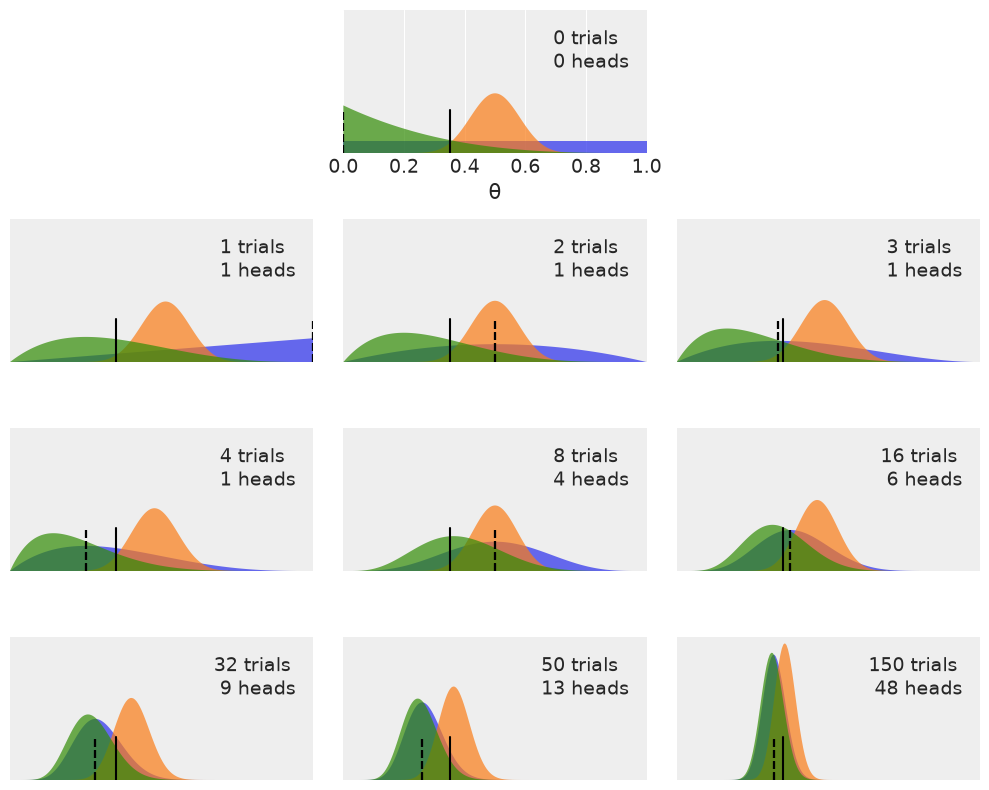

Chapter 1 Exercises#
import os
import warnings
import arviz as az
import matplotlib.pyplot as plt
import jax.numpy as jnp
from jax import local_device_count
import numpyro
import numpyro.distributions as dist
seed=1234
if "SVG" in os.environ:
%config InlineBackend.figure_formats = ["svg"]
warnings.formatwarning = lambda message, category, *args, **kwargs: "{}: {}\n".format(
category.__name__, message
)
az.style.use("arviz-darkgrid")
numpyro.set_platform("cpu") # or "gpu", "tpu" depending on system
numpyro.set_host_device_count(local_device_count())
/home/runner/work/bap-numpyro/bap-numpyro/.venv/lib/python3.13/site-packages/tqdm/auto.py:21: TqdmWarning: IProgress not found. Please update jupyter and ipywidgets. See https://ipywidgets.readthedocs.io/en/stable/user_install.html
from .autonotebook import tqdm as notebook_tqdm
Question 1#
We do not know whether the brain really works in a Bayesian way, in an approximate Bayesian fashion, or maybe some evolutionary (more or less) optimized heuristics. Nevertheless, we know that we learn by exposing ourselves to data, examples and exercises - well, you may say that humans never learn, given our record as a species on subjects such as wars or economic systems that prioritize profit and not people’s well-being… Anyway, I recommend you do the proposed exercises at the end of each chapter.
From the following expressions, which one corresponds to the sentence “the probability of being sunny, given that it is the 9th of July of 1816”?
p(sunny)
p(sunny | July)
p(sunny | 9th of July of 1816)
p(9th of July of 1816 | sunny)
p(sunny, 9th of July of 1816) / p(9th of July of 1816)
There are two statements that correspond to the Probability of being sunny given that it is the 9th of July of 1816
p(sunny | 9th of July of 1816)
p(sunny, 9th of July of 1816) / p(9th of July of 1816)
For the second one recall the product rule (Equation 1.1)
A rearrangement of this formula yields
Replace A and B with “sunny” and “9th of July of 1816” to get the equivament formulation.
Question 2#
Show that the probability of choosing a human at random and picking the Pope is not the same as the probability of the Pope being human.
Let’s assume there are 6 billion humans in the galaxy and there is only 1 Pope, Pope Francis, at the time of this writing. If a human is randomly picked the chances of that human being the pope are 1 in 6 billion. In mathematical notation
Additionally I am very confident that the Pope is human, so much so that I make this statement. Given a pope, I am 100% certain they are human.
Written in math
$\( p(human | Pope) = 1 \)$
In the animated series Futurama, the (space) Pope is a reptile. How does this change your previous calculations?
Ok then:
And
Question 3#
In the following definition of a probabilistic model, identify the prior and the likelihood:
The priors in the model are
The likelihood in our model is
Question 4#
In the previous model, how many parameters will the posterior have? Compare it with the model for the coin-flipping problem.
In the previous question there are two parameters in the posterior, \(\mu\) and \(\sigma\).
In our coin flipping model we had one parameter, \(\theta\). It may seem confusing that we had \(\alpha\) and \(\beta\) as well, but remember, these were not parameters we were trying ot estimate. In other words we don’t really care about \(\alpha\) and \(\beta\) - they were just values for our prior distribution. What we really wanted was \(\theta\), to determine the fairness of the coin.
Question 5#
Write Bayes’ theorem for the model in question 3.
Question 6#
Let’s suppose that we have two coins. When we toss the first coin, half the time it lands on tails and the other half on heads. The other coin is a loaded coin that always lands on heads. If we take one of the coins at random and get heads, what is the probability that this coin is the unfair one?
Formalizing some of the statements into mathematical notation:
The probability of picking a coin at random, and getting either the biased or fair coin is the same:
The probability of getting heads with the biased coin is 1, $\(p(Heads | Biased) = 1\)$
The probability of getting heads with the fair coin is .5 $\(p(Heads | Fair) = .5\)$
Lastly, remember that after picking a coin at random, we observed heads. Therefore we can use Bayes rule to calculate the probability that we picked the biased coin:
To solve this by hand we need to rewrite the denominator using the Rule of Total Probability:
We can use Python to do the math for us:
(1 * .5)/(.5 * .5 + 1* .5)
0.6666666666666666
Questions 7 & 8#
Modify the code that generated Figure 1.5, in order to add a dotted vertical line showing the observed rate of \(\frac{Heads}{Number-of-tosses} \). Compare the location of this line to the mode of the posteriors in each subplot.
Try re-running this code using other priors (beta_params) and other data (n_trials and data).
plt.figure(figsize=(10, 8))
n_trials = [0, 1, 2, 3, 4, 8, 16, 32, 50, 150]
data = [0, 1, 1, 1, 1, 4, 6, 9, 13, 48]
theta_real = 0.35
beta_params = [(1, 1), (20, 20), (1, 4)]
x = jnp.linspace(0, 1, 200)
for idx, N in enumerate(n_trials):
if idx == 0:
plt.subplot(4, 3, 2)
plt.xlabel('θ')
else:
plt.subplot(4, 3, idx+3)
plt.xticks([])
y = data[idx]
for (a_prior, b_prior) in beta_params:
p_theta_given_y = jnp.exp(dist.Beta(a_prior + y, b_prior + N - y).log_prob(x))
plt.fill_between(x, 0, p_theta_given_y, alpha=0.7)
# Add Vertical line for Number of Heads divided by Number of Tosses
try:
unit_rate_per_toss = y/N
except ZeroDivisionError:
unit_rate_per_toss = 0
plt.axvline(unit_rate_per_toss, ymax=0.3, color='k', linestyle="--")
plt.axvline(theta_real, ymax=0.3, color='k')
plt.plot(0, 0, label=f'{N:4d} trials\n{y:4d} heads', alpha=0)
plt.xlim(0, 1)
plt.ylim(0, 12)
plt.legend()
plt.yticks([])
plt.tight_layout();
UserWarning: The figure layout has changed to tight

Question 9#
Go to the chapter’s notebook and explore different parameters for the Gaussian, binomial and beta plots (figures 1.1, 1.3 and 1.4 from the chapter). Alternatively, you may want to plot a single distribution instead of a grid of distributions.
Question 10#
Read about Cromwell’s rule on Wikipedia.
Question 11#
Read about probabilities and the Dutch book on Wikipedia.